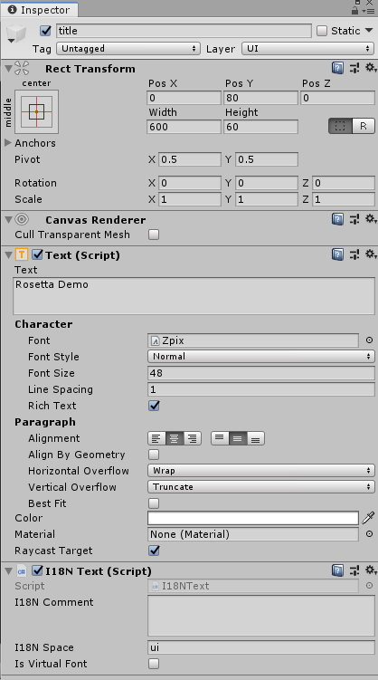

I18NText 组件
I18NText 是用来标记一个 GameObject 上存在需要 I18N 处理的 Text 的组件。
在运行时，I18NText 组件通过订阅 Rosetta 的 LocaleChanged 事件，从而在切换语言后自动读取并替换当前 GameObject 的 Text 组件内 Text 字段为当前语言对应的 I18N 文本资源。根据设置不同，可能还会替换 font 字段。

属性
| Name | Description |
|---|---|
| I18N Comment | 多语言资源注释。该注释会随着当前的 I18N 音频资源的模板文件一同交给多语言工作者。 |
| I18N Space | 该 I18N Text 资源所属的域，关于域的说明请参阅 使用 Collector 和 Creator: 域 |
| Is Virtual Font | 是否启用虚拟字体设定。当启用后，Rosetta 加载时会先去根据 Virtual Font Name 读取虚拟字体配置文件，然后获取对应语言的真实字体文件的名称后再加载并应用。 |
| Virtual Font Name* | 虚拟字体配置文件的名称。 |
注： 只有当 IsVirtualFont 为真时，该字段才有用。